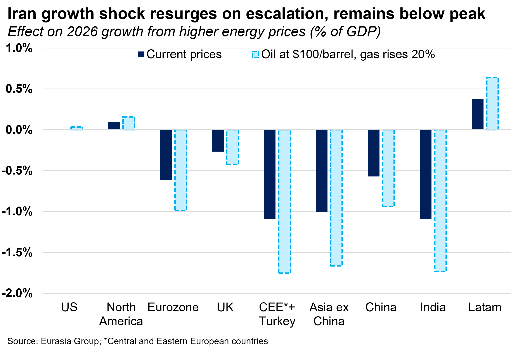
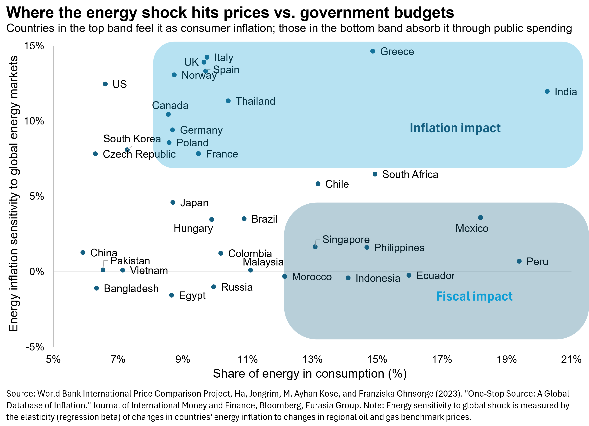
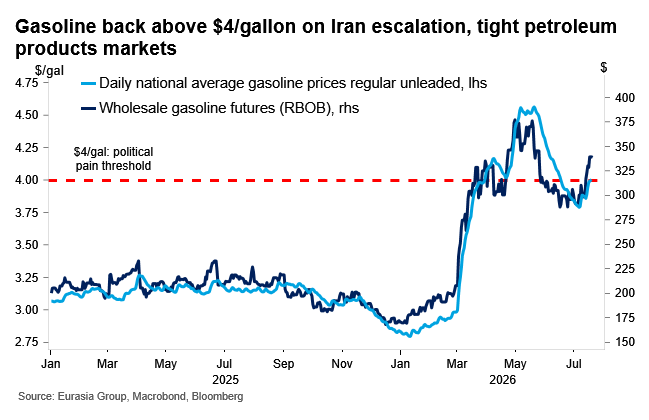
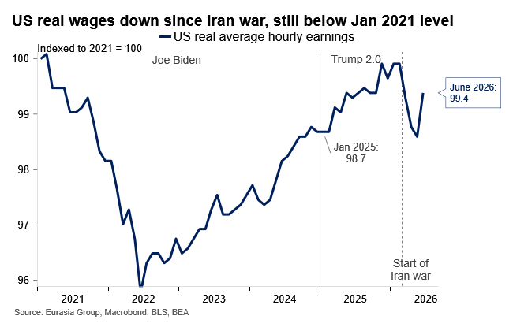
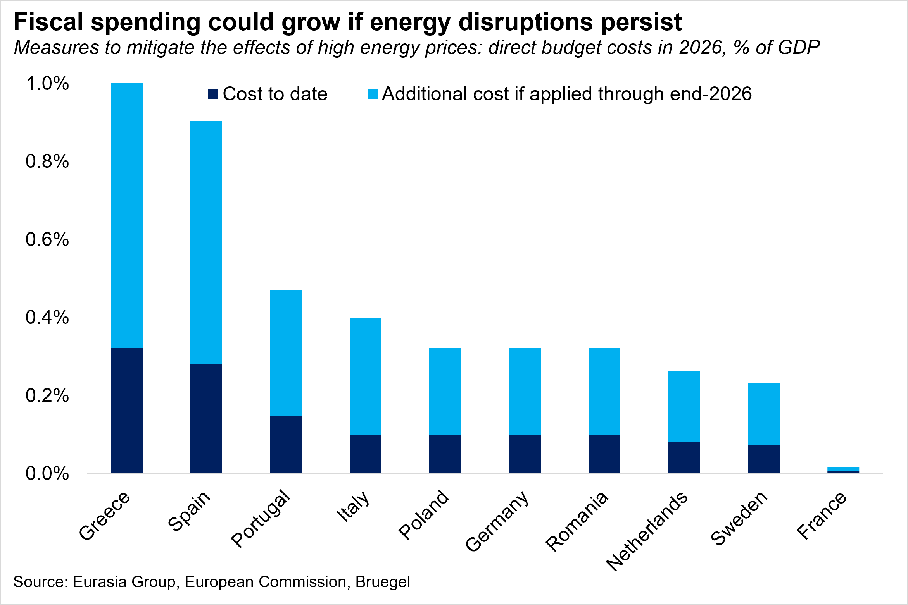
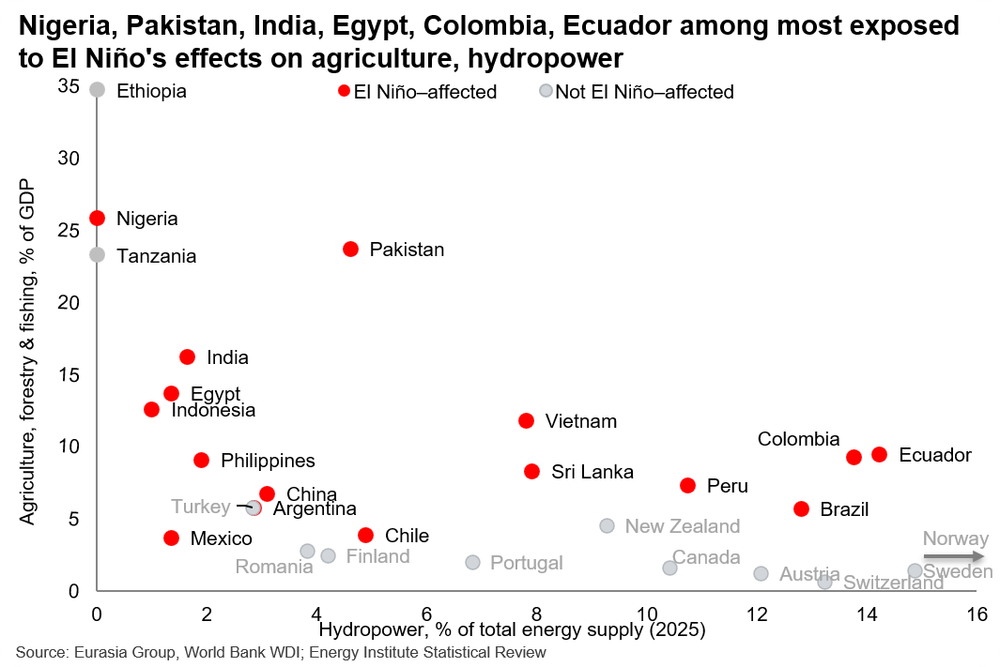

|
 |
|||
|
||||
|
||
Iran-US escalation and surging energy prices widen hit to growth and inflation by about 30% compared to late June. This note updates our earlier estimates of the direct impact from higher energy prices (see: Asia and Europe face biggest growth hit from energy spike, 12 March 2026). We rank countries with the same methodology, leveraging regional oil, gas, and coal price changes obtained from regional energy futures, weighted by each economy’s net consumption of each fossil fuel. In our basecase of continued escalation (55% odds), oil trades in a $90-$110 band (see: Escalation likely as Iran sees path to Hormuz control, 15 July 2026); if it settles in that band through year-end, the hit to growth and inflation grows by a further 30-40%, a material risk for Asian and European energy importers.
 European and Asian importers most exposed, as AI investment boom cushions tech-heavy economies. The pain is concentrated in energy importers without a large technology sector, with Europe, Turkey, and South Asian economies most hit. Booming AI-related investment is offsetting the energy drag in South Korea, Japan, Vietnam, and Singapore. However, heavy reliance on Qatari LNG could pose issues in Northeast Asia in case of a cold, long winter. In Europe, policy measures—industrial energy price caps, grid fee exemptions, and state spending on infrastructure (including clean energy)—can offset some of the energy drag, though several of the investment schemes will take time to implement (see: Wholesale electricity costs will fall sharply before 2030, 9 July 2026).  US gasoline is back above $4, but Trump prioritizing more favorable Iran deal over possible electoral pain. Wholesale gasoline prices, a leading indicator for prices at the pump, are up 15% from early July lows, as rising crude and tight refined-product supply feed through, the latter driven by disruption to Gulf and Russian refiners (see first chart below). By pressing ahead with escalation despite the hit to pump prices and household budgets (see second chart), Trump made clear he cares more about securing a strong deal than about the risk to Republican lawmakers’ reelection prospects. That reinforces our odds of Democrats flipping the House (85%), while making gains but stopping short of flipping the Senate (40% odds) amid a challenging electoral map (see Democrats face narrower path to smaller House majority after Virginia ruling, 8 May).   Europe's fiscal response will grow if shock persists, especially in highly indebted Southern European economies. The cost of measures committed to date is 0.1% of GDP, peaking at 0.3% in Greece and Spain. Should oil prices rise further, in line with Eurasia Group's expectations, and most of these measures be extended through year-end, the cost could reach about 0.4% of GDP in Italy and 1% in Spain and Greece. Most countries have the space to moderately step up the fiscal response, even within the strictures of EU spending rules. Barring nonlinear developments, the fiscal costs would rise but likely remain manageable, while partially mitigating the effects on output and prices. Higher energy costs would further undermine the fledgling recovery in the EU, but the bloc would likely remain on course for modest growth this year and avoid a recession. Ultimately, we expect fiscal constraints to cap spending (see: Bond market more likely to constrain EU, UK, than US, Japan, 21 May 2026).  Natural gas is Europe's most durable exposure, but shortages will be avoided in the upcoming winter. Qatari LNG must exit through Hormuz, with no pipeline detour of the kind that might shield Gulf crude in the medium term. European gas will stay tight into the upcoming winter, but a serious supply break is unlikely. Europe does not have a large dependency on Qatari LNG, so the impact is more through price competition with Northeast Asia. A mild, wet winter as well as ongoing and aggressive household electrification will offset some heating demand (see: Europe will fall short of gas supply targets while avoiding major disruptions, 16 July 2026). Strong El Niño will add pressure on many importers already absorbing high energy prices. The economies exposed to this combination are energy importers with large farm or hydropower sectors—Pakistan, India, Egypt, and the Philippines rank among the most El Niño-affected (see chart below) and among the hardest hit by Iran-related energy price surges. In Latin America, drought risks could erode some of the energy windfall in Colombia, Ecuador, and Brazil (see: Bad policy could make El Niño's trillion-dollar tab worse, 19 June 2026).  |